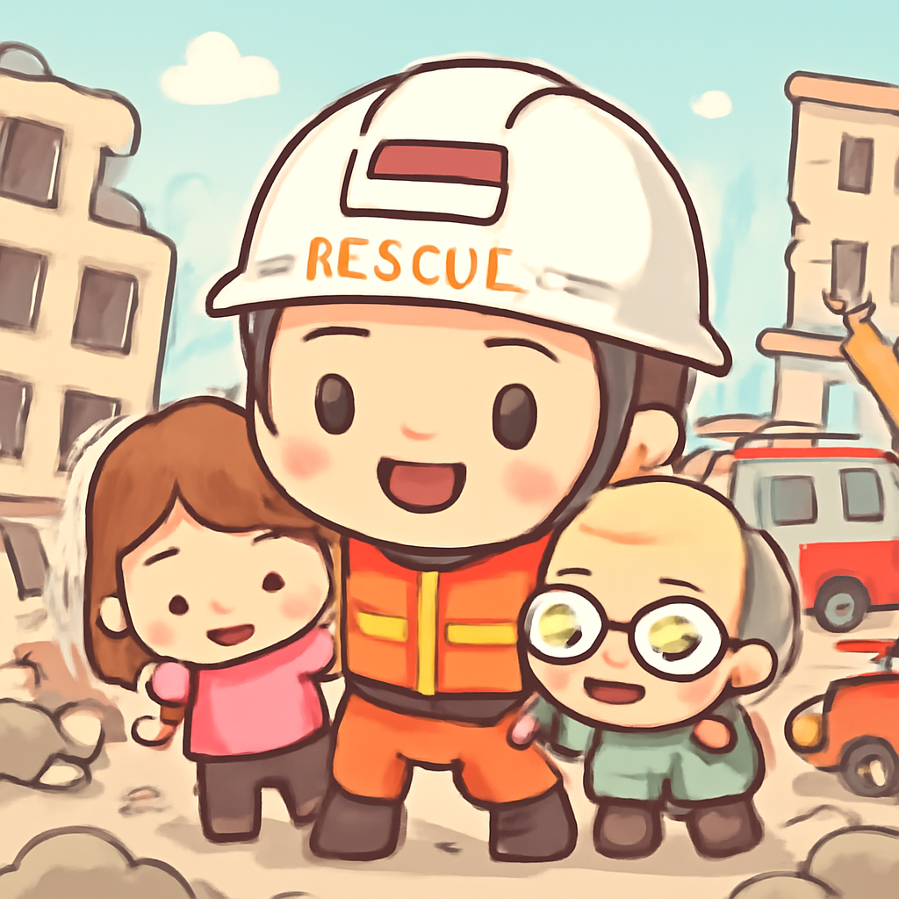
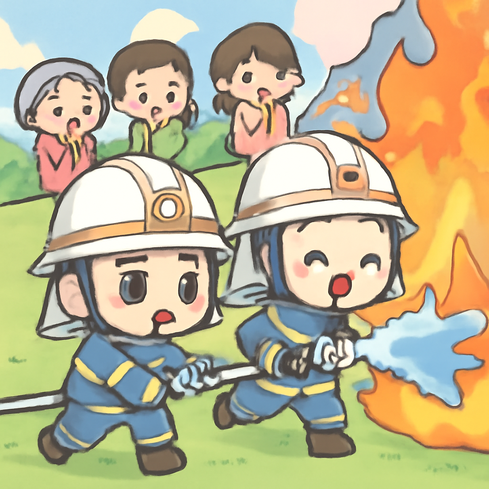

其一 · 印尼 · 地震造成53人喪生
印尼發生強烈地震，造成大量人員流離失所

在印尼發生的強震中，已確認53人喪生，數百棟房屋和公共建築受損嚴重，救援工作仍在進行中。這場災難不僅影響了當地居民，也引起了國際社會的關注，大家都在關心後續的救災進展。希望這場地震能成為人們重視建設安全建築的警鐘！
🔗 原始新聞 ↗
2026-08-17 · 以古觀今，以笑抗愁
印尼發生強烈地震，造成大量人員流離失所

在印尼發生的強震中，已確認53人喪生，數百棟房屋和公共建築受損嚴重，救援工作仍在進行中。這場災難不僅影響了當地居民，也引起了國際社會的關注，大家都在關心後續的救災進展。希望這場地震能成為人們重視建設安全建築的警鐘！
🔗 原始新聞 ↗
俄羅斯聲稱烏克蘭攻擊造成七人喪生
在烏克蘭的最新衝突中，俄羅斯官員表示，至少七人在基輔的攻擊中喪生，並且俄方夜間對烏克蘭發動了致命的空襲。這場衝突的加劇讓人們對於和平的希望越來越渺茫，國際社會的緊張氣氛也再度升溫。希望這場悲劇不會讓人忘記和平的重要性。
🔗 原始新聞 ↗
希臘島嶼發生雙重火災，火勢蔓延迅速

在希臘的薩拉米納島上，雙重火災造成至少兩人遇難，約200名消防員全力以赴，努力控制火勢。這場火災對當地居民和旅遊業造成了重大影響，讓人不禁思考氣候變遷對自然災害的影響。希望未來能有更多的防災措施，讓大家的夏天更安全！
🔗 原始新聞 ↗
多倫多美國領事館發生槍擊事件
在多倫多的美國領事館發生槍擊事件，讓這個原本安靜的區域瞬間成為焦點。當地警方正在調查事件，並加強安全措施。這起事件揭示了社區內潛在的犯罪網絡問題，讓人不禁思考這背後的社會因素。希望相關部門能找到解決之道，讓社區恢復安全！
🔗 原始新聞 ↗
四幅文藝復興畫作在意大利被盜
在意大利的梅西納，一場精心計劃的藝術品竊盜事件發生，四幅文藝復興時期的畫作被竊取。這起事件不僅讓當地文化界震驚，也引發了對藝術品安全的討論。藝術品的價值不僅在於金錢，更在於其背後的歷史與文化意義，希望這些珍貴的畫作能夠早日回到正確的地方。
🔗 原始新聞 ↗